鹿児島旅行
| 日付 | 2010年12月4日（土） - 2010年12月7日（火） | ||||
|---|---|---|---|---|---|
| 山域 | 九州の山 | ||||
| メンバー | 家族（妻） | ||||
| 山行形態 | 3泊4日ホテル泊 | ||||
| アクセス | 電車、飛行機、車 | ||||
| ルート |
|
4日目
今日は朝から指宿の砂むしを体験する。
宿の向かいにある公共の施設は運が悪いことに1年に1回のお休みの時期。
仕方がないので近くのホテルの砂むし温泉施設に行く。
ひとっぷろ浴びて出発する。
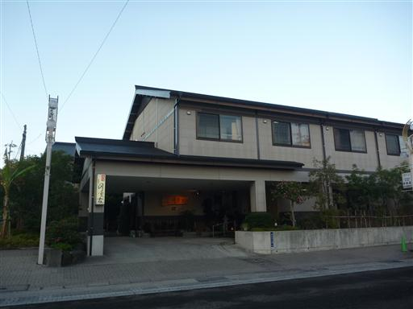
北上して鹿児島市街を目指す。
今日はさほど天気が良くないが、桜島がよく見えている。
この姿を見るのは久しぶりだ。
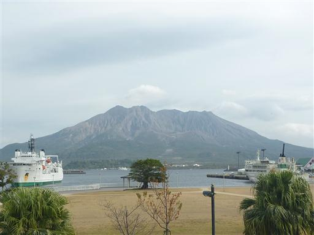
途中で鹿児島神宮に立ち寄る。
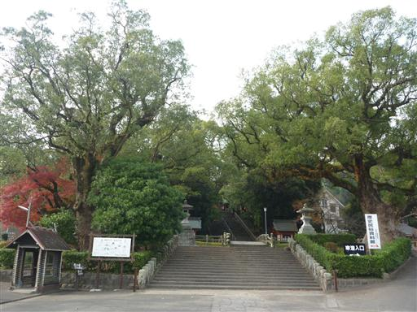
入口の両脇には巨木が二本、立っている。
樹齢何年か分からないが、見事な枝ぶりだ。
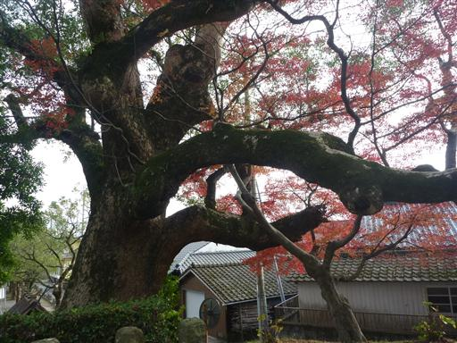
石橋を渡って中に入る。
境内では木の枝を切る作業が行われている。新年を迎える準備だろう。
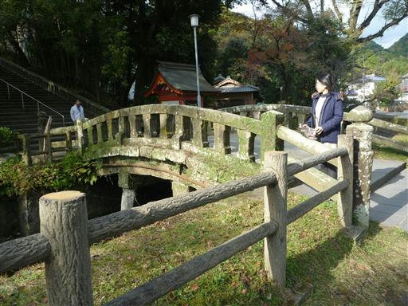
中はそれなりに広く、建物は立派だ。
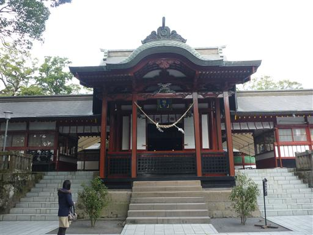
天井には、たくさんの絵が描かれている。
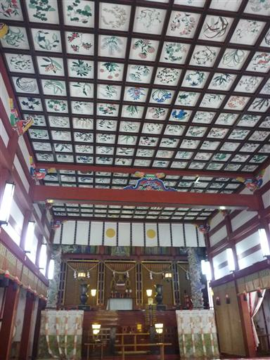
飛行機の時間まで、まだ少しあるので霧島にある犬飼滝に行ってみる。
ここはかつて坂本龍馬とお龍が新婚旅行で訪れたところらしい。
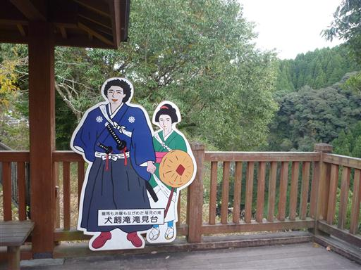
犬飼滝を見下ろす。落差36mの滝で、一直線に滝つぼまで落ちている。
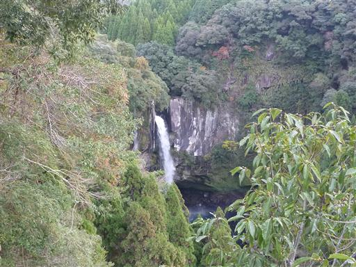
滝つぼまで通じる道があるので、そちらに行ってみることにする。
滝から流れてくる川の水は透き通っている。
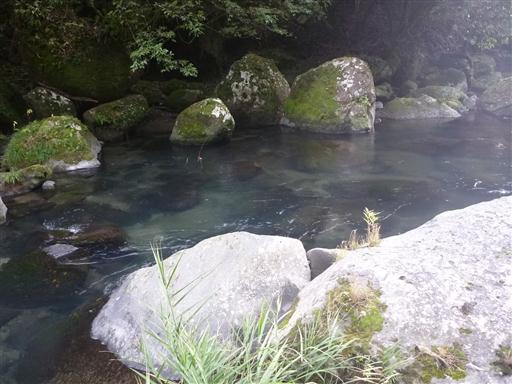
犬飼滝の滝つぼに到着。ちょうど日が出てきて、虹が現れる。
これで鹿児島観光は終わり。空港に引き返す。
天気がよく、気候もよく、のんびりできた鹿児島旅行だった。
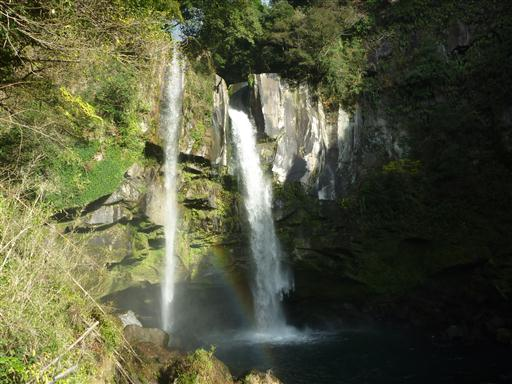